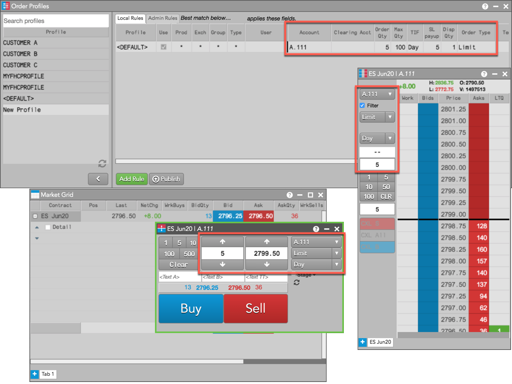
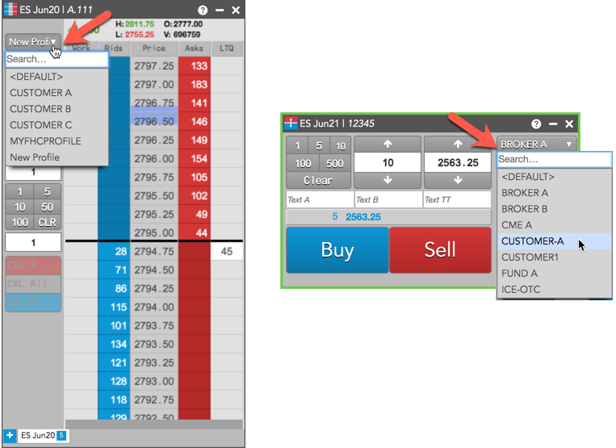

As you click on different profiles in Order Profiles, order entry widgets are automatically seeded with the best match rules for each profile.
Note: Order entry widgets can not be seeded with different profiles while editing a profile or adding a rule. Ensure that you save all changes before selecting a profile.
To select an order profile for trading:
- In an open Order Profiles widget, click a profile in the Profile panel.
Tip: You can use the Search box to filter the list of profiles.
The open order entry widgets are seeded with the variable fields of the best match rule for the selected profile.

- Click on a different profile as needed.
If you select a different profile (e.g., New Profile), the variable fields in the order entry widgets are replaced with the best match rule for the new profile.

Selecting an order profile in MD Trader or Order Ticket
To select order profiles at order entry, you have the option to show an order profile selector in the Order Ticket and MD Trader. To enable this preference, check Show order profile dropdown in Preferences | Orders.
- Click Edit | Preferences in the menu bar and click Orders.
- Enable the Show order profile dropdown option.
- Click the dropdown field in an order entry widget and select a profile.

Order entry widgets seed with the best match rules and fields for the selected profile. As you select different profiles, order entry fields change to the new values.